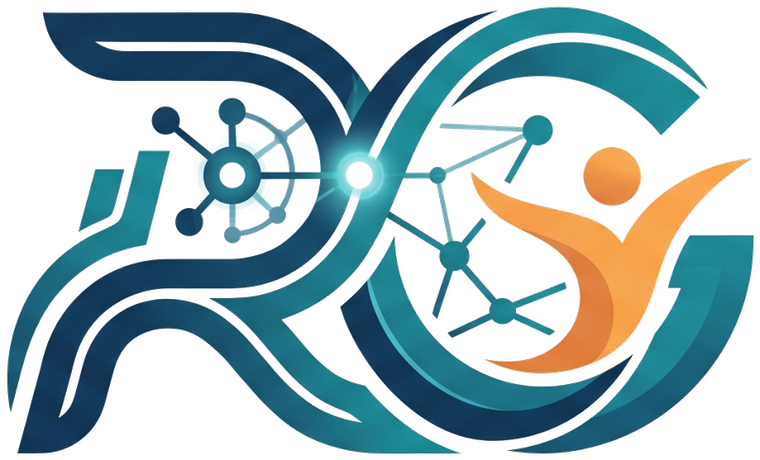

Independent. Remote-first. Built for small IT teams.
RG Tech Solutions is a one-person, senior-led consultancy — no account managers, no junior hand-offs, no bloated retainer.
Richard Gash
I'm the person you'll actually work with — on every call, every roadmap, every rollout. After years leading enterprise IT service delivery, service desk operations, and digital transformation programs, I started RG Tech Solutions to bring that same senior-level thinking to small IT teams, without the enterprise price tag or the layers in between.
Built on real IT operations experience
RG Tech Solutions grew out of years spent running IT service desks, managing global infrastructure, and leading digital transformation programs inside large organizations. The same problems kept coming up for smaller businesses: repetitive manual work, systems that "look fine" on a dashboard but frustrate the people using them, and IT capacity that can't keep pace with growth.
I built RG Tech Solutions to close that gap — structured, ITIL-informed IT practice, automation-first thinking, and a genuine focus on experience, delivered directly by me, remotely, wherever you are.
Help small IT teams automate, expand, and be felt
Small IT teams deserve the same caliber of thinking as an enterprise IT department — automation, measurable experience, sensible security — without needing to hire for it.
Every engagement aims for the same outcome: less manual toil for your team, technology that supports growth, and an experience your people would actually rate well.
The principles behind how I work
Clarity Over Jargon
We explain technology decisions in terms of business impact, not acronyms.
People First
Honest recommendations and clear communication — you're a partner, not a ticket number.
Responsive Support
Fast response times and proactive monitoring, so small issues stay small.
Security By Default
Every recommendation is made with security and resilience built in, not bolted on.

Why IndependentOne point of contact. Full accountability.
There's no committee, no ticket getting reassigned three times, and no junior consultant learning on your dime. You get direct, senior-level attention on every engagement — and for work that needs extra hands, I bring in a small, vetted network of specialists while staying your single point of contact.